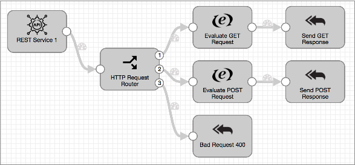

Microservice Pipelines
Microservice Pipelines
A microservice pipeline is a pipeline that creates a fine-grained service to perform a specific task.
For example, you might use a microservice pipeline to validate changes to user accounts. You can have the pipeline check for matching accounts to validate account creation requests, account updates, and account deletions. The pipeline can tag requests as actionable or not and send all responses back to the originating system for next steps.
You can create REST-based and message-based microservice pipelines that use standalone execution mode. Other microservice types and platforms are planned for future releases.
A microservice pipeline uses a microservice origin to listen for or read JSON-formatted requests. In the pipeline, you can use any available processor to transform and route the records as needed. You can also use destinations and executors to write data and execute additional actions as needed.
Then, use one or more microservice destinations to send responses back to the origin and write the records to a destination system if necessary. The origin then transmits JSON-formatted responses back to the origin system.
For example, you might use the WebSocket Server origin to listen at a WebSocket endpoint and process all authorized requests. In the pipeline, you use stages to process the data and route records to different destinations based on whether the record is considered a success record or bad request record. You use two Send Response to Origin destinations to return different responses, 200 for OK and 400 for Bad Request. The origin then passes the records with the responses back to the WebSocket endpoint. Or, you might use a different microservice destination to write records to a destination system while sending responses back to the origin from the destination system.
For more information and a descriptive video, see our blog post on microservice pipelines. For a full description of a sample microservice pipeline and a tutorial on creating one, see our GitHub tutorial, "Creating a CRUD Microservice Pipeline."
Stages for Microservice Pipelines
When you configure a microservice pipeline, you use a microservice origin, any available Data Collector processor, destination, and executor, and one or more microservice destination.
Microservice Origins
Microservice origins listen for or read JSON-formatted requests. They also send responses from microservice destinations back to the origin system.
- REST Service origin - Listens on an HTTP endpoint, parses the contents of all authorized requests, and sends responses back to the originating REST API. Creates multiple threads to enable parallel processing in a multithreaded pipeline.
- WebSocket Client origin - Reads data from a WebSocket server endpoint. Can send responses back to the origin system as part of a microservice pipeline.
- WebSocket Server origin - Listens on a WebSocket endpoint and processes the contents of all authorized WebSocket client requests. Creates multiple threads to enable parallel processing in a multithreaded pipeline. Can send responses back to the origin system as part of a microservice pipeline.
Microservice Destinations
Most microservice destinations perform two tasks. In addition to writing data to the destination system, they send responses to the origin stage, to be passed to the origin system. When you configure microservice destinations, you specify whether you want the response to be the records successfully written to the destination system or the responses passed from the destination system.
When you don't need to write data to a destination system, you can use the Send Response to Origin destination, which passes records and responses to the origin without writing to a destination.
When you want to write to destination systems without sending a response, you can use non-microservice destinations in microservice pipelines.
- HTTP Client destination - Writes data to an HTTP endpoint. Can send responses to a microservice origin in a microservice pipeline.
- Kafka Producer destination - Writes data to a Kafka cluster. Can send responses to a microservice origin in a microservice pipeline.
- Kinesis Producer destination - Writes data to Kinesis Streams. Can send responses to a microservice origin in a microservice pipeline.
- Send Response to Origin destination - Sends records with the specified response to the microservice origin in the pipeline. Does not write data to a destination system.
Sample Pipeline
When you initially create a microservice pipeline, a sample microservice pipeline displays in the configuration canvas. You can edit the pipeline to suit your needs. Or, you can create a standalone pipeline and use the microservice stages in a clean canvas.
The sample pipeline shows how you might use the REST Service origin and several Send Response to Origin destinations in a microservice pipeline:

The sample pipeline uses an HTTP Router processor to route data to different streams based on the REST API request method and path parameter, performs additional processing, and then passes the records to the Send Response to Origin destinations. The destinations pass the records back to the REST Service origin with the specified status codes, in this case, 200 for OK. The pipeline error handling also passes records back to the origin, with the 400 Bad Request status code. The REST Service origin generates a response with the records it receives and sends it to the originating client.
The pipeline description contains instructions on interacting with it using the curl command line HTTP client. For a step-by-step explanation of the sample pipeline, see "Creating a Microservice Pipeline" in the Creating a CRUD Microservice Pipeline tutorial.